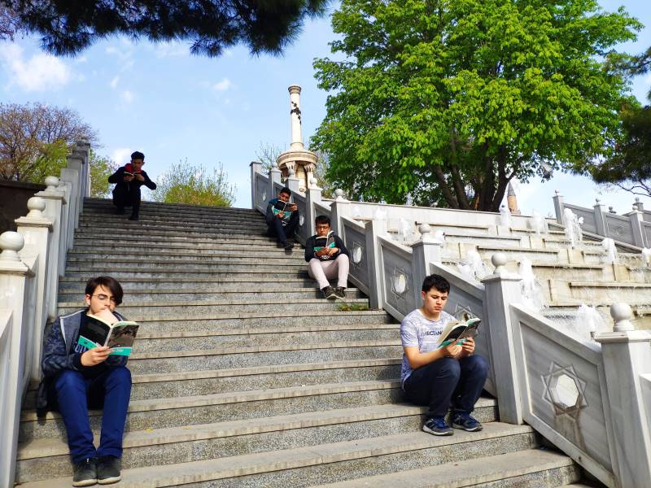

Ducane is the founder and developer of “Inside the Cell: A Biology Adventure,” a story-driven game that teaches biology to children through immersive gameplay. The game combines high-quality design with a proven educational framework, making it both fun and scientifically accurate.
His business plan revolves around building a larger ecosystem of educational games, starting with biology and expanding into physics and chemistry. Each subject will be built with the same core structure—adaptive learning, professional validation, and engaging storytelling.
Ducane works closely with instructors and researchers to ensure each level of the game delivers real educational value. His long-term goal is to transform education into an experience that children enjoy, remember, and want to come back to.
The project is currently seeking investment and partnerships. If you are an educator, investor, or game designer, feel free to reach out and join this exciting mission.
